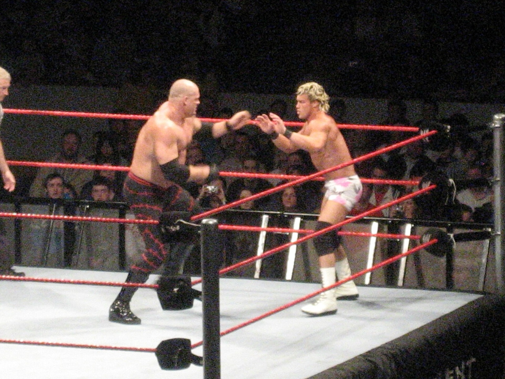

Kane senza maschera: la notte del 2003 in cui si scoprì il volto a Raw
Giugno 2003, Raw. Kane sfida Triple H per il titolo con una regola crudele, se perde si toglie la maschera. Perde, e per la prima volta mostra il volto a tutti. Da lì nasce il Kane più cattivo di sempre, e la maschera torna solo otto anni dopo.
Foto in copertina: Sam & Emer, CC BY-SA 2.0, via Wikimedia Commons
Lo sapevi che Kane si è tolto la maschera in diretta e non l'ha più rimessa per anni?
È la curiosità del mio short. E per chi è cresciuto con il Big Red Machine è uno dei momenti più forti di sempre: Kane senza maschera, per la prima volta, davanti a tutti.
Il match: titolo contro maschera
Siamo a Raw del 23 giugno 2003. Kane sfida Triple H per il World Heavyweight Championship.
Ma c'è una regola, voluta dal co-general manager Eric Bischoff: se Kane perde, si toglie la maschera. Per un personaggio costruito tutto su quel volto nascosto, è la posta più alta possibile.
E Kane perde. Triple H vince grazie all'aiuto dei suoi compagni di Evolution.
La maschera cade
Kane mantiene la parola. Si sfila la maschera e la gente vede per la prima volta la sua faccia. Niente cicatrici terribili, niente mostro: un uomo pelato, con gli occhi di chi sta per esplodere.
Ed esplode. Subito dopo prende Rob Van Dam, il suo compagno di squadra, e lo distrugge con la chokeslam. In un attimo Kane diventa cattivo, e molto più cattivo di prima.
Il Kane più folle di sempre
Da quel momento la WWE lo trasforma. Senza maschera Kane non è più solo il "mostro": è un uomo instabile, imprevedibile, capace di tutto.
E le settimane dopo lo dimostrano:
- il 14 luglio 2003, a Raw, attacca Jim Ross durante un'intervista e gli dà fuoco;
- la settimana dopo se la prende con Linda McMahon sullo stage di Raw;
- da lì nasce la rivalità con Shane McMahon: Kane lo batte in un last man standing a Unforgiven e in un ambulance match a Survivor Series.
Roba che oggi in TV non vedremmo mai. Ma nel 2003 era proprio questo il punto: farti paura senza bisogno della maschera.
Otto anni a volto scoperto
Nello short dico che non l'ha più rimessa per anni. E infatti Kane resta senza maschera dal 2003 fino al 2011.
Alla fine del 2011 partono i video "Kane Resurrected". Il 12 dicembre 2011 torna a Raw con una nuova maschera, prima metallica e poi rossa. Più avanti, ai tempi della Authority, la consegna perfino a Stephanie McMahon, prima di tornare il Kane mascherato nel 2014.
Se vuoi sapere com'era Kane ancora prima, quando faceva il dentista Isaac Yankem e il finto Diesel, te l'ho raccontato in Kane prima di Kane.
Meglio con o senza maschera?
Per me il Kane mascherato resta il personaggio iconico, quello del debutto del 1997 e del fratello di Undertaker. Ma il Kane senza maschera del 2003 aveva qualcosa di diverso: era più umano e proprio per questo faceva più paura. Non sapevi mai cosa avrebbe fatto la settimana dopo.
Oggi Glenn Jacobs, l'uomo dietro Kane, è nella WWE Hall of Fame dal 2021 ed è stato anche sindaco della contea di Knox, in Tennessee. Una carriera che pochi possono vantare, dentro e fuori dal ring.
Tu da che parte stai: meglio con la maschera o senza? Scrivilo nei commenti dello short e iscriviti al canale Tony Wrestling. Altre curiosità nella rubrica Lo sapevi che e tra i miei Shorts.
Fonti:
- Short: Il grande Kane (Tony Wrestling)
- Kane (wrestler)), Wikipedia (smascheramento del 23 giugno 2003, Rob Van Dam, Jim Ross, Linda e Shane McMahon, ritorno della maschera nel 2011, Hall of Fame, sindaco della contea di Knox)
Domande frequenti
Quando Kane si è tolto la maschera?
Il 23 giugno 2003 a Raw, dopo aver perso contro Triple H un match per il World Heavyweight Championship in cui la regola era che, se perdeva, doveva togliersi la maschera.
Cosa fece Kane dopo essersi tolto la maschera?
Si scoprì il volto, colpì con la chokeslam il suo compagno di squadra Rob Van Dam e diventò cattivo. Nelle settimane dopo diede fuoco a Jim Ross e attaccò Linda McMahon, iniziando una lunga rivalità con Shane McMahon.
Quando Kane ha rimesso la maschera?
Nel dicembre 2011. Dopo i video "Kane Resurrected", tornò a Raw il 12 dicembre 2011 con una nuova maschera. Era rimasto a volto scoperto per più di otto anni.